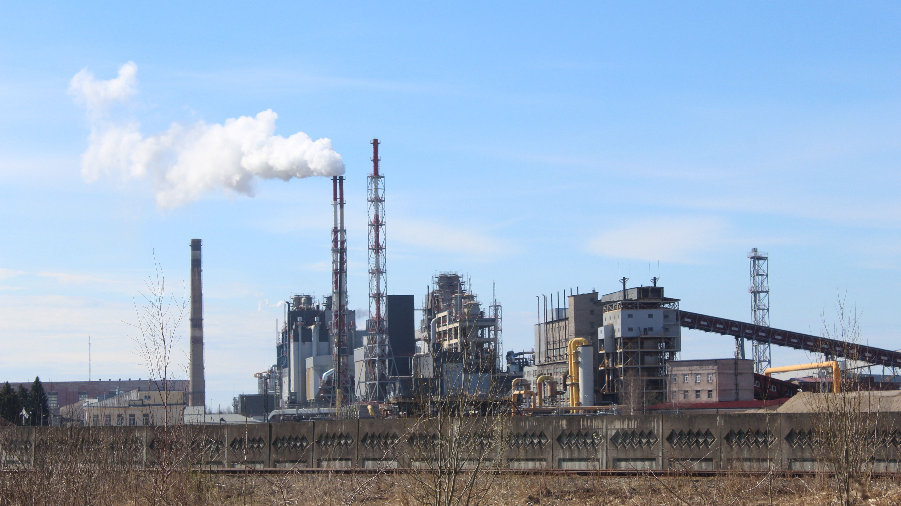
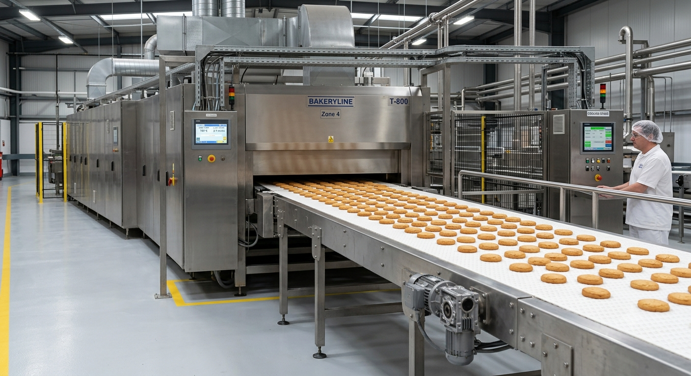
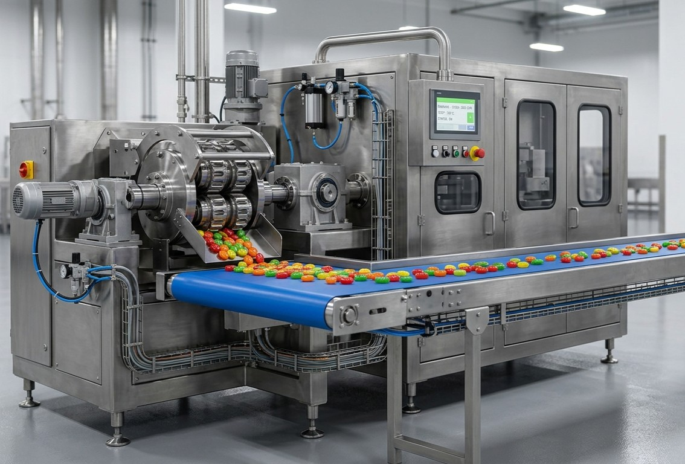
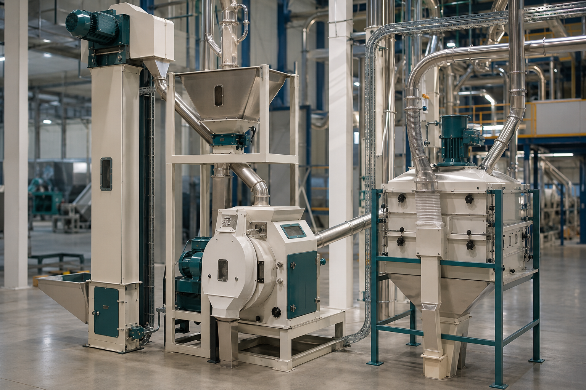
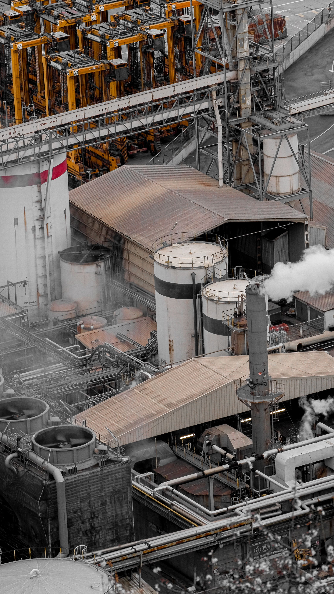

Ari Global Industries delivers integrated industrial machinery sourcing, turnkey manufacturing facilities, supplier coordination, and project execution support for organizations seeking reliable, scalable, and efficient production capabilities.
Ari Global Industries provides comprehensive industrial machinery and manufacturing solutions designed around specific production objectives, operational requirements, and long-term growth plans.
Our involvement extends beyond equipment sourcing. We coordinate suppliers, evaluate manufacturing capabilities, align technical specifications, and support project execution through a structured and disciplined approach.
Whether establishing a new manufacturing facility, expanding existing operations, or implementing specialized production systems, we provide dependable support from concept through implementation.

Automatic and semi-automatic production systems.

Complete packaging production solutions.

Integrated candy production systems.

Industrial grain processing solutions.

Tailored manufacturing solutions.
Ari Global Industries provides complete turnkey biscuit manufacturing facilities designed for commercial and industrial-scale production. Solutions can be configured according to product type, production capacity, automation requirements, and operational objectives.
Whether establishing a new production facility or expanding an existing operation, we support machinery sourcing, technical coordination, production line integration, and execution planning through a structured project approach.
We support the development of complete PET bottle production facilities for beverage, food, pharmaceutical, personal care, and industrial packaging sectors.
Solutions are designed around production targets, container specifications, quality standards, and future expansion requirements, ensuring operational flexibility and manufacturing efficiency.
Ari Global Industries supports the establishment of confectionery production facilities designed for hard candy, soft candy, toffee, filled candy, and specialty confectionery products.
Production lines can be configured around specific product categories, output requirements, automation preferences, and packaging needs, enabling efficient and scalable manufacturing operations.
Ari Global Industries supports complete maize processing and milling facilities designed for commercial food production, agricultural processing, and industrial manufacturing applications.
Our solutions are developed around production requirements, capacity objectives, and operational efficiency, enabling clients to establish reliable processing operations with scalable long-term growth potential.
Not every manufacturing project fits a standard production model. Ari Global Industries works closely with clients to identify technical, operational, and commercial requirements before developing an appropriate sourcing and execution strategy.
Through our supplier network, sourcing expertise, and project coordination capabilities, we are able to support a broad range of industrial manufacturing initiatives beyond the solutions presented on this page.
Access to manufacturers, suppliers, and industrial partners across multiple sectors.
Understanding of machinery, production systems, and industrial project requirements.
Structured alignment of manufacturing capabilities, specifications, and delivery needs.
Supporting successful project outcomes rather than simple product transactions.
Whether your objective involves establishing a new manufacturing facility, expanding production capacity, modernizing operations, or implementing a specialized industrial solution, Ari Global Industries is ready to support your project through structured sourcing and execution.
Start A Discussion